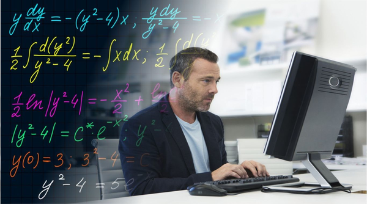

Инженер-математик
Профессия
Инженер-математик — это специалист, который сочетает глубокие знания в области математики с инженерными навыками для решения практических задач в различных отраслях. Инженер-математик — это специалист, который сочетает глубокие знания в области математики с инженерными навыками для решения практических задач в различных отраслях.
В чём заключается
Инженер-математик решает задачи, требующие сложных вычислений и аналитического подхода. Он анализирует требования заказчиков, строит математические модели для описания процессов, разрабатывает алгоритмы и методы их реализации, тестирует решения на корректность и эффективность, а также оптимизирует их для работы в реальных условиях. В его обязанности входит работа с большими данными, создание алгоритмов для машинного обучения, разработка методов шифрования или моделирование физических и экономических процессов.
Отрасли
Инженеры-математики востребованы в разработке алгоритмов для искусственного интеллекта и машинного обучения, где они создают модели для распознавания образов, обработки естественного языка и прогнозирования. В криптографии они разрабатывают методы защиты данных и шифрования, обеспечивая безопасность финансовых транзакций и коммуникаций. В компьютерном моделировании инженеры-математики создают симуляции для физики, биологии, экономики и инженерии, позволяя предсказывать поведение сложных систем. Другая важная область — высокопроизводительные вычисления, где специалисты оптимизируют алгоритмы для работы с большими массивами данных и распределёнными системами.
Суть работы
Работа инженера-математика в IT — это поиск оптимальных решений через призму математики. Он преобразует абстрактные задачи в конкретные алгоритмы, которые можно реализовать в программном коде. Его роль — не просто решить уравнение, а сделать так, чтобы это решение работало быстро, точно и масштабировалось под растущие нагрузки. Это требует не только глубоких знаний математики, но и понимания IT-инфраструктуры и ограничений современных вычислительных систем.
Образование
1. Высшее образование (Для фундамента)
Прикладная математика и информатика
Математическое моделирование
Компьютерные науки и искусственный интеллект
Криптография и кибербезопасность
Физико-математические направления
2. Колледжи и техникумы
Программирование и информационные технологии
Прикладная математика
3. Онлайн-образование
4. Bootcamp’ы (Для скорости)
5. Альтернативные пути
Участие в научных проектах и олимпиадах по математике.
Работа в исследовательских центрах